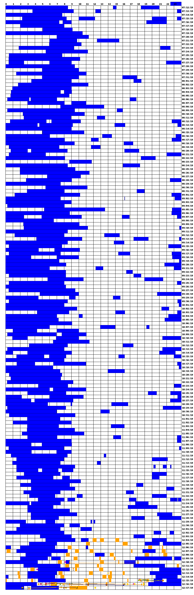

Self Tracking
Table of Contents
What?
Keeping track of my biological and psychological status and functioning over the long term! Collecting yummy data and gathering insight!! :3
Why?
Taking inspiration from Quantified Self, these are the main reasons I want to do this:
- increase self awareness and control
- creative data collection, analysis, and visualization
- fun hardware and software methods
Most critically, the earlier I start collecting data, the more insight I will be able to gain moving forwards!!!
I know that initially I might not have the best data, nor the best systems in place for collecting data, but that’s okay! I have to start somewhere! And I know that I’ll change up my schemas for collecting data often, particularly at first, and that’s okay too!
History
I have done this sort of thing in the past, to some extent, and in various forms. For example, for the latter half of 2019 I kept a sleep log using SuperMemo’s Sleep Chart. At the end of last year I started writing my own data collection and visualization tools for doing more than just tracking sleep! In early 2018 I did some mood tracking with Mood Panda, and towards the end of 2018 and beginnings of 2019 I used Year in Pixels.
Here is my data from latter half of 2019: blue is sleep data, which comprises most of it because I didn’t start collecting other data until much later! This is the result of importing my sleep chart data into my own visualization tools and combining it with my other data. The yellow-orange is eating data. And the lines are mood and other continuously assessed data.

Process
The scientific method
Following Wikipedia,
- question
- conjecture
- predict
- test
- analyse
Self tracking recipe
Following Quantified Self,
- question
- observe
- reason
- consolidate insight
Formula as I like it
Taking inspiration from the above, I like this:
- question
- conjecture
- predict
- test
- analyse
- consolidate insight
Data
I will have to figure out what data I want to collect! I also need to define my schema for the database. This will change and evolve over time as I change my mind and get better ideas about what I want to collect and how I want to represent and organize it!
What to track
Here are some ideas about some quantitative data what I want to collect:
- Food and fluid consumption, including precise measurements, and piggy back off of existing nutritional databases
- Sleep time and sleep stages
- Bathroom stuff
- Physical activity, exercise, walking, steps taken
- Pulse, blood pressure, and oxygen saturation over time
- Core body temperature over time
- Hunger, thirst, sleep drive, learn drive, and other drives and cravings
- Time spent on various activities
- Physical aptitude (e.g. how much energy I have when walking)
And here are some ideas about some qualitative data I want to collect:
- Mood/feelings/emotions/anxiety/energy levels over the course of the day
Schema
For time ranges I’ll use begin and end datetime values. For subjective ratings I’ll use the likert scale! For temperatures I’ll use celsius.
Here is my current ideas about the database scheme to use:
- Sleep
- Time range
- Sleep satisfaction rating
- Exercise
- Time range
- Soreness rating
- Energy rating
- Average ambient temperature
TODO put a UML diagram here
Tools
I have to figure out what tools I will use to collect, store, and analyse the data!
- What data collection hardware or software do I want to use?
- I’ll have to figure this out, but for now I will resort to manual data entry if I have to.
- What database solution should I use to store my data?
- I think I want to use MySQL! It’ll give me a good excuse to get more familiar with it anyways.
- And what programming language or other tools should I use to do analysis?
- I suppose I’ll use Python! :o I’m quite comfy with it and it’s a very practical language for data science. It’d be really cool to use some machine learning stuff too, so I’ll try out PyTorch.
Preparation
In order to prepare I should familarize myself with a few things:
- MySQL
- Data analytics ecosystem in Python
- Including PyTorch
Self tracking
So here’s where I’ll actually keep all my on-going top-level self tracking thoughts and reports!
It’s an ongoing process! Collecting data is a habit (and will eventually be partially automated in conjunction to the habits). And whenever I think of questions, conjectures, and predictions, I’ll update the list here. I’ll write reports and insights whenever I am inspired to do so by the collected data.
Observations
Here I’ll just make casual notes!
Questions
An ongoing list of questions that I will write (possibly tentative) answers to as I feel I’ve collected sufficient evidence.
- Why do I have insomnia sometimes?
- Why do I need to use the bathroom so much at night sometimes?
- Why do I find my sleeping disturbed by physical discomfort sometimes?
- Why is it that sometimes when I go for a walk I have plenty of energy and speed, and other times I’m a bit more sluggish?
- What amino acids and other nutrients effect my sleep, particularly REM?
- What is the ideal amount for me to eat, and when is the best time frame for me to eat?
- What foods give me good digestion?
- What is the best time for me to sleep?
- How much do I eat? (measure it with a scale!)
- How much do I weigh?
- Are there detectable fluctuations in my mental capacity that can be correlated with external habits such as diet, exercise, and sleep?
Conjectures
Here are my current hypotheses (including contradictory ones) which I will refine and expand over time.
- Too much protein (which amino acids?) causes me to be more sluggish when walking.
- More REM sleep correlates with walking energy.
- Eggs and whey protein enabled better REM sleep for me.
- Choline enables better REM sleep for me.
- Going to bed later is a better fit for my circadian rhythm.
Predictions
Here are my current predictions based on my above hypotheses that will inform my experiments.
- Cutting out eggs will give me more energy when walking.
- Cutting out eggs will decrease my REM sleep.
- Going to bed later will decrease insomnia and increase overall sleep satisfaction.
Reports
Whenever I feel that I’ve collected enough data to test my predictions, I’ll analyse the data and write a report here with a labeled date.
Insights
Whenever I feel I’ve gained significant insight from my reports, I’ll both write about them here, as well as write answers to the relevant questions above with a link to the insights written here.
Meta
I should uh, figure out how best to deal with changing database schemas! I should also have a good way in place to make casual observations and notes Thinking about hardware for tracking, I should definitely turn my phone into a portable self tracking device !!!!!!! And I’ll have to think about other devices that would be good for this too…….